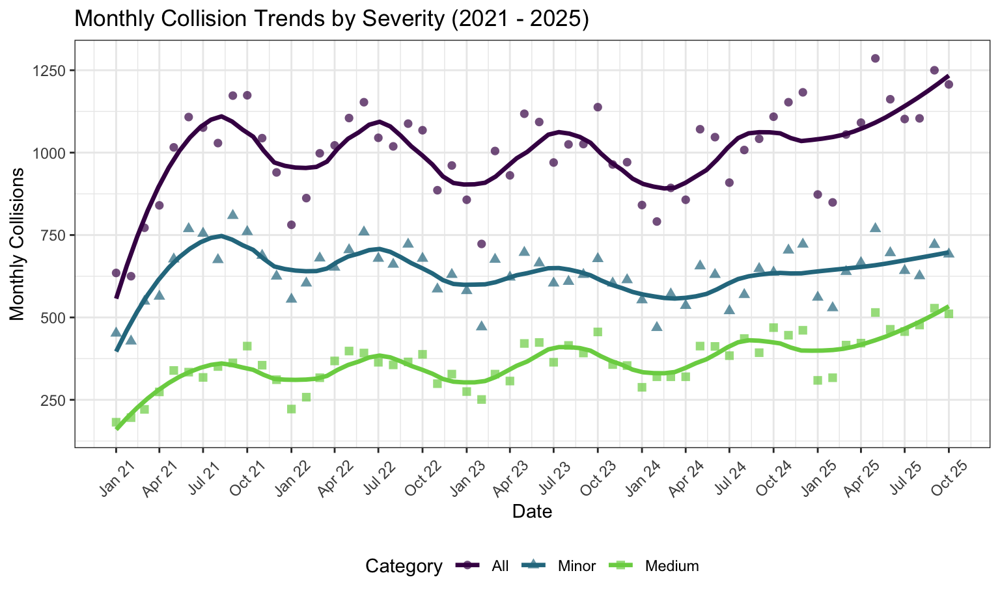
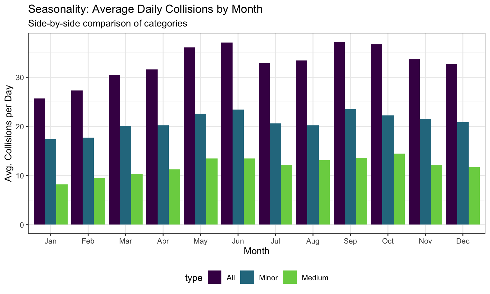
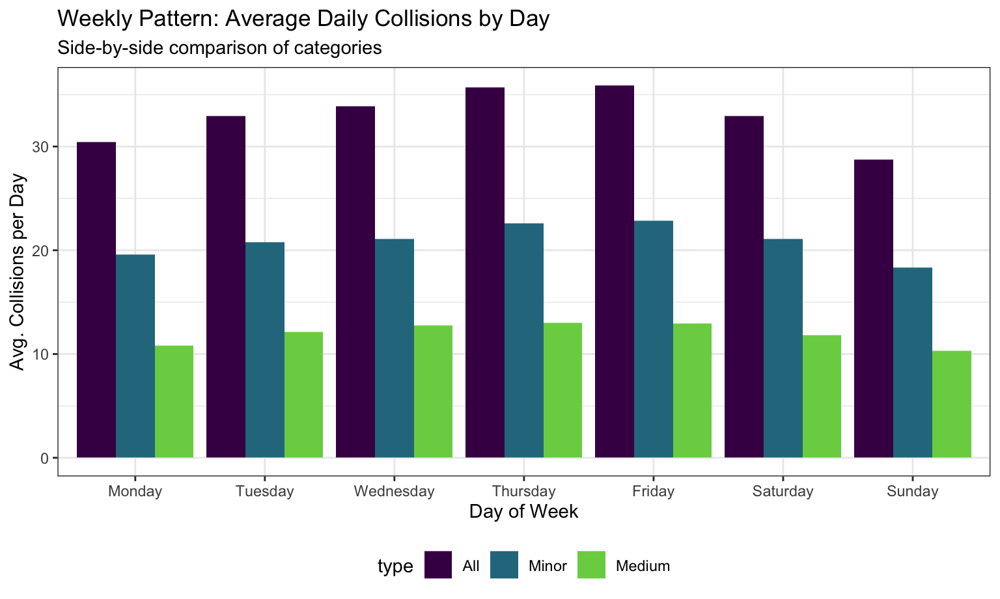
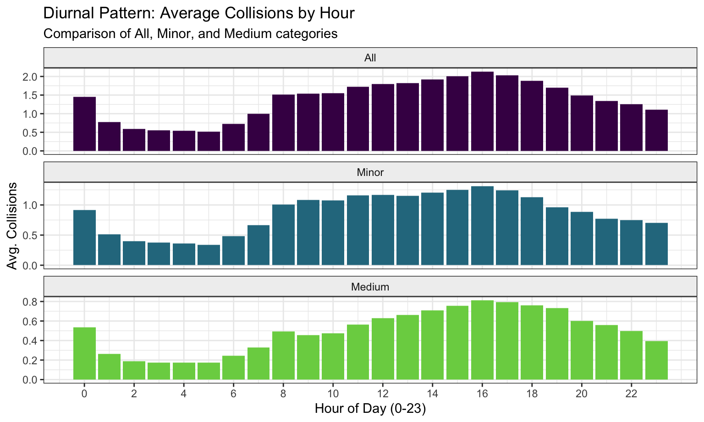

This page analyzes vehicle collision data in Manhattan over a 5-year period (2021-2025). The dataset provides detailed information on each collision event. The goal of this temporal analysis is to understand trends over multiple years, seasonal patterns across months, and daily peak hours for collisions. We specifically examine the trends across three categories: All Collisions (In total), Minor Severity (No injuries/deaths), and Medium Severity (Injuries involved).
We begin by loading the cleaned dataset and preparing it for
visualization and analysis. Because the original dataset contains one
row per person involved in a collision, we first filter it to retain
only distinct collision_id values so that our analysis
reflects the number of collision events rather than the number of
individuals affected.
To further support our severity-based analysis, we create a new column that classifies each collision into the All, Minor, or Medium severity categories.
collision_df <- read_csv("./data/collision_df.csv")
# Clean and Classify
collision_df_plot = collision_df |>
distinct(collision_id, .keep_all = TRUE) |>
mutate(
date = make_date(year, month, day),
month = month(date, label = TRUE, abbr = TRUE),
day_of_week = factor(day_of_week, levels = c("Monday", "Tuesday", "Wednesday", "Thursday", "Friday", "Saturday", "Sunday")),
hour = as.numeric(hour),
# Define Severity
severity = case_when(
num_killed > 0 ~ "Severe",
num_injured > 0 ~ "Medium",
TRUE ~ "Minor"
)
)
# Create the "Expanded" Dataset for Plotting
df_all <- collision_df_plot |> mutate(type = "All")
df_minor <- collision_df_plot |> filter(severity == "Minor") |> mutate(type = "Minor")
df_medium <- collision_df_plot |> filter(severity == "Medium") |> mutate(type = "Medium")
# Combine and set factor levels for consistent ordering
plot_df <- bind_rows(df_all, df_minor, df_medium) |>
mutate(type = factor(type, levels = c("All", "Minor", "Medium")))This chart visualizes the total number of collisions per month from the start of 2021 to late 2025. It helps identify if the overall frequency of accidents is increasing, decreasing, or stabilizing. We use scatter points to show exact monthly counts and smooth lines to visualize the underlying trend, distinguishing between All, Minor, or Medium incidents.
# Aggregating by Month-Year and Type
monthly_trend = plot_df |>
mutate(month_year = floor_date(date, "month")) |>
count(month_year, type, name = "count")
p1 = monthly_trend |>
ggplot(aes(x = month_year, y = count, color = type, shape = type)) +
# Add scatter points
geom_point(size = 2, alpha = 0.7) +
# Add smooth line (Loess regression)
geom_smooth(se = FALSE, method = "loess", formula = 'y ~ x', span = 0.3, size = 1.2) +
# Viridis Colors
scale_color_viridis_d(option = "D", end = 0.8) +
# Customizd ticks to show every 3 months
scale_x_date(date_breaks = "3 months", date_labels = "%b %y") +
labs(
title = "Monthly Collision Trends by Severity (2021 - 2025)",
x = "Date",
y = "Monthly Collisions",
color = "Category",
shape = "Category"
) +
theme(
axis.text.x = element_text(angle = 45, vjust = 0.5, hjust = 0.5),
)
p1
Pattern Observed: The time series reveals a distinct upward trend in collision frequency starting from early 2021. This likely reflects a “return to normal” in traffic patterns following the lower activity levels during the peak of the pandemic.
All trend line
closely mirrors the Minor category, indicating that the
vast majority of collisions in Manhattan result in property damage
rather than injury.To understand seasonality, we calculate the average number of collisions that occur per day for each month. This averages out the data across all 5 years (e.g., the “January” bar represents the average daily collisions for all Januarys in the dataset). Here we use a grid layout to compare how the Minor and Medium collisions fluctuate throughout the year independently.
# Calculate average daily collisions per month per type
seasonality_df = plot_df |>
count(type, date, month) |>
group_by(type, month) |>
summarise(avg_daily = mean(n), .groups = "drop")
p2 = seasonality_df |>
ggplot(aes(x = month, y = avg_daily, fill = type)) +
# position = "dodge" places the bars side-by-side instead of stacking them
geom_col(position = "dodge") +
scale_fill_viridis_d(option = "D", end = 0.8) +
labs(
title = "Seasonality: Average Daily Collisions by Month",
subtitle = "Side-by-side comparison of categories",
x = "Month",
y = "Avg. Collisions per Day"
)
p2
Pattern Observed: There is a clear seasonal cycle dictated by weather and human activity levels.
Medium (injury-causing) collisions follow roughly the same
seasonal shape as Minor collisions, suggesting that injury
risk rises proportionally with traffic volume rather than being driven
by specific seasonal road conditions (like ice in winter).This part tries to examine the collision patterns across different days of the week and reveal the weekly “rhythm” of the city and helps identify which days pose the highest risk.
# Calculate average daily collisions per day of week
weekly_df = plot_df |>
count(type, date, day_of_week) |>
group_by(type, day_of_week) |>
summarise(avg_daily = mean(n), .groups = "drop")
p3 = weekly_df |>
ggplot(aes(x = day_of_week, y = avg_daily, fill = type)) +
geom_col(position = "dodge") +
scale_fill_viridis_d(option = "D", end = 0.8) +
labs(
title = "Weekly Pattern: Average Daily Collisions by Day",
subtitle = "Side-by-side comparison of categories",
x = "Day of Week",
y = "Avg. Collisions per Day"
)
p3
Pattern Observed: The data shows a progressive increase in accident frequency throughout the workweek.
This grid shows the average hourly collision rate for each category. It highlights whether Minor collisions and Medium injury-causing accidents follow different daily schedules.
# Calculate average hourly collisions per type
total_days_recorded = n_distinct(pull(collision_df_plot, date))
hourly_df = plot_df |>
count(type, hour) |>
mutate(avg_hourly = n / total_days_recorded)
p4 = hourly_df |>
ggplot(aes(x = hour, y = avg_hourly, fill = type)) +
geom_col(show.legend = FALSE) +
# Use Grid (Facet Wrap)
facet_wrap(~type, ncol = 1, scales = "free_y") +
scale_fill_viridis_d(option = "D", end = 0.8) +
scale_x_continuous(breaks = seq(0, 23, 2)) +
labs(
title = "Diurnal Pattern: Average Collisions by Hour",
subtitle = "Comparison of All, Minor, and Medium categories",
x = "Hour of Day (0-23)",
y = "Avg. Collisions"
) +
theme(strip.background = element_rect(fill = "#f0f0f0"))
p4
Pattern Observed: The data shows a classic “commuter profile” with distinct daily rhythms.
This temporal analysis of Manhattan vehicle collisions (2021–2025) demonstrates that accident frequency is highly predictable and strongly correlated with human activity patterns rather than random chance.
The data suggests a “Volume-Based Risk” model: collisions are most frequent when the city is most alive—during the evening rush hours, towards the end of the workweek (Thursday and Friday), in the warmer autumn months, and in the years following the return of regular economic activity. The parallel trends between Minor and Medium incidents suggest that interventions aimed at simply reducing overall traffic volume or congestion during peak periods—specifically the 4 PM - 6 PM window and Thursday evenings—could effectively reduce both nuisance accidents and injury-causing crashes simultaneously.